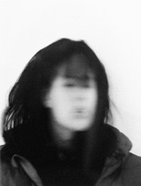

Nous sommes Besili Trafic. Nous avons grandi à la campagne et étudié nos arts dans les villes. Nous sommes belgo-suisses aux racines multiples. Nous sommes comédien·ne·s, musicien·ne·s, danseur·euse·s, scénographes, plasti-cien ·ne·s et performeur·euse·s.
Nous sommes une masse mouvante à 8 têtes et 16 pieds. Nous sommes un collectif pluridisciplinaire qui s'ancre dans une démarche de transmission de savoir au sein du groupe afin de développer son propre langage.
Nous voulons le valoriser en créant des espaces de recherche qui lui sont consacrés. Nous ne cherchons pas à fonctionner sur mandat mais sur une construction collective nécessitant l’implication de tou·te·s à chaque étape du processus.
Nous croyons en l'oeuvre artistique collective car elle s’oppose à un système que nous jugeons trop individualiste.

GASPAR NARBY 1996
est musicien. Il obtient en 2018 un bachelor en Musique Populaire à l ’universi té de Goldsmi ths à Londres, avec la mention très bien («first honours»). Son projet solo, riche de trois EPs et d’une dizaine de singles déjà, cumule plusieurs millions de streams. Il l’a emmené sur des scènes britanniques et suisses (à Corsica Studios, à SET Dalston, ou au Notting Hill Arts Club à Londres, mais aussi au Studio 15 à Lausanne et à La Fête Des Vignerons à Vevey notamment) et lui a offert le titre de «artist to watch» par MixMag et SRF.
Le clip pour son morceau Elderflower (dir. Yolane Rais) est sélec- tionné aux Journées de Soleure 2020. Il a également mené la création sonore pour des performances du chorégraphe suisse Tommy Cattin (Nomad, 2020), de l’artiste visuel suisse Damien Comment (Lever Le Voile, 2017) de la performance artist britannique Amy Steel (Unmoored, 2017), ainsi qu’enregistré des field recordings additionnels pour le film de danse 3D du chorégraphe suisse Gilles Jobin (WOMB, 2016), lauréat du Dance Film Festival de San Francisco.
Il a également créé le sound design et la musique du court-métrage Hold Your Breath (2018) du réalisa- teur américain Théo Le Sourd, qui a été vu près de 3mio de fois sur YouTube uniquement. En 2021 également, il co-fonde le collectif BESILI TRAFIC dont le premier spectacle La maison d’en haut voit le jour en mars 2023.
X

GILLES ESCOYEZ 1997
est comédienet metteur en scène. Après ses études d’interprétation dramatique à l’IAD, Gilles Escoyez met en scène avec sa collègue Laurie Perissutti « On se réincarnera pas en papillons », un projet de théâtre documentaire fédérant deux groupes d’adolescents aux cultures différentes. Après avoir été joué en Suisse et en Belgique, le projet fait l’objet d’un documentaire projeté à Bozar et à Tunis dans le cadre du festival « My first doc ».
Gilles intègre parallèlement le collectif BESILI TRAFIC , avec lequel il signe un premier spectacle « La maison d’en-haut », actuellement en cours de diffusion. Il participe également à plusieurs workshops avec notamment Julie Stanzak (Wuppertal Tanzteater), la cie « Still Life » ou encore le collectif TG Stan. En 2022, Gilles prend les rênes de « Bruxelles ma belle », émission culturelle hebdomadaire diffusée sur Radio Alma où il invite les artistes à venir partager leurs projets avec les auditeurs. Gilles Escoyez intègre en 2023 l’équipe du spectacle jeune public « La méthode du Dr Spongiak » avec lequel il tournera entre 2024 et 2026.
X

JEROME CASTIN 1995
est guitariste/ contrebassiste/compositeur/arrangeur/producteur multi-instrumentiste. Il a étudié la guitare jazz pendant 6 ans à LUCA School Of Arts (Leuven), avec un master spécialisé en composition et arrangement. En avril 2022, il sort son premier album Blood Dance avec son projet de jazz-fusion BBUNG.
En parallèle, il s’occupe de la création et de la performance musicale du spectacle « On se réincarnera pas en papillons » mis en scène par ses collègues Laurie Perissutti et Gilles Escoyez, qu’iels ont présenté au Théâtre du Jura et au centre culturel Bruegel à Bruxelles. Il a également suivi une formation de management d’artistes à l’IHECS Academy à Bruxelles en 2023. Dans ce collectif, BESILI TRAFIC, il est compositeur, arrangeur, et performe une partie de la musique en live à la guitare et fait partie de la création dramaturgique du spectacle.
X

LUNA SCHMID 1995
est comédienne. Après une maturité théâtre au lycée cantonal de Porrentruy, elle entame des études de théâtre à Bruxelles à l’école internationale LASSAAD puis retourne en Suisse et débute un Bachelor Schauspiel à la ZHdK dont elle sort diplômée en 2021. En 2019 elle reçoit le Prix d’étude du Concours d’art dramatique du Pour-cent culturel Migros.
Elle joue dans Rausch – ein Sommernachtstraum (Theater Uri) mis en scène par Livio Beyeler ainsi que dans l’installation interactive Multiversum Birsfelden (Roxy Birsfelden) mis en scène par Katharina Germo. De 2020 à 2022 elle est engagée en tant que comédienne par le Theater Oberhausen en Allemagne où elle travaille notamment avec Hakan Savas Mican, Bert Zander, Jeremy Nedd, Elsa-Sophie Jach, Reut Shemesh et Florian Fiedler. En 2021 elle reçoit le prix d’encouragement BA Théâtre de la ZHdK pour son travail Wo der Regen hinfällt.
En 2021 également, elle co- fonde le collectif BESILI TRAFIC dont le premier spectacle La maison d’en haut voit le jour en mars 2023. En 2023 également, elle apparait devant la caméra dans la deuxième saison de NEUMATT (Zodiac Picture, SRF).
X

MERLIN DELENS 1997
est comédien et metteur en scène. Après des études secondaires en option théâtre au Lycée Martin V, il entame des études d’interprétation dramatiques à l’Institut des Arts de Diffusion en Belgique. Il obtient son diplôme de Master en 2021. En 2020, aux côtés de cinq autres artistes bruxellois, il fonde l’asbl GRIFFES. La même année, il joue dans le long métrage Zéria réalisé par Har ry Cleven (pr imé au Reykjavik independent film festival, hollywood international golden age, New york independent cinema awards, Europe film festival U.K, Prague, Athens, London, Berlin and Tokyo international monthly art film festival), ainsi que dans le projet théâtral l’Abattoir de la compagnie KRAFT au coq’Arts festival à Bruxelles.
En 2021, il joue dans le projet Désir, Terre et Sang de l’Infini Théâtre et des Baladins du Miroir ainsi que dans le court-métrage Lupus réalisé par Zoé Brichau et sélectionné au film festival de Gent. En 2021 également, il co-fonde le collectif BESILI TRAFIC dont le premier spectacle La maison d’en haut voit le jour en mars 2023.
X

SOPHIE SCHMID 1997
est scénographe, costumière et performeuse. Après une formation à l’école d’arts appliqués de la Chaux-de-Fonds en section mode, elle réalise un stage de 6 mois dans les ateliers de couture du Anhaltisches Theater Dessau. Elle fait partie de la Compagnie Balor et participe à différentes pièces, telles que « Le bal des mollets saillants », « Le Roi s’arpente la plage des 6 pompes » et « Le Mangeur de Monde ». En 2019, elle intègre le collectif Blue vulvettes, avec lequel elle réalise le court-métrage « Le sexe féminin existe », sélectionné par la suite aux Journées de Soleure 2020. En 2019 également, elle débute un Bachelor en scénographie à la ZHdK.
Elle collabore avec le collectif autrichien Material für die nächste Schicht sur différents projets tel que «The gods we don't believe in must still be crazy», «Vergessen» nominé au STELLA Darstellender Kunstpreis für junges Publikum et «Schön und Gut». En 2021, elle co-fonde le collectif BESILI TRAFIC dont le premier spectacle La maison d’en haut voit le jour en mars 2023. Elle fait également partie du collectif L’Actif Posthelvetia et réalise les costumes, la scénographie et la lumière pour le spectacle «Die Nation, a sound that misbehaves».
X

LAURIE PERISSUTTI 1996
comédienne et metteuse en scène. Après une année de formation de théâtre, danse et chant en Espagne, Laurie poursuit ses études d'interprétation dramatique à l’IAD dont elle sort diplômée en 2020. En 2021, elle co-met en scène « On se réincarnera pas en papillons » avec Gilles Escoyez. Cette pièce fait également l’objet du film documentaire « Maintenant qu’on est là », réalisé par le même duo.
Dès 2022, Laurie travaille entre la Suisse et la Belgique sur différentes production théâtrales dont « La maison d’en haut » du collectif Besili Trafic, « La Felicità » de et par Pablo Jakob Montefusco, ou encore « Audedans la Forêt » mis en scène par Camille Sansterre.
X

LORENA STADELMANN 1995
est une artiste performeuse guatémalteco-suisse. Elle grandi dans le Canton du Jura. En 2015, elle s’installe à Buenos Aires, Argentine où elle se forme en danse contemporaine, performance, théâtre et cinéma. Elle intègre différents programmes de formation et prend par t aux cour s des professeur-e-s les plus prestigieux de Buenos Aires, tels que Nora Moseinco, Matias Feldmann et Santiago Gobernori, Melina Seldes, Edgardo Castro, Viviana Iasparra...etc. Elle réalise un premier solo en Suisse Who is Clara ? en 2019.
En 2020, elle crée trois performances in situ Garage coeur brisé, 88.5 Radio Mentira et I dance your sound, you play my moves. En mai 2021 elle sort son premier EP de musique sous le nom de Baby Volcano. En 2021 également, elle co-fonde le collectif BESILI TRAFIC dont elle accompagne le travail en tant qu’oeil extérieur. Lorena Stadelmann est artiste associée à l’Abri à Genève pour la saison 2021-2022 et au théâtre Sévelin 36, Lausanne pour la saison 22/23.
X